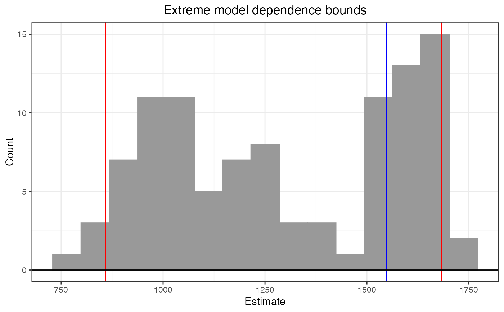
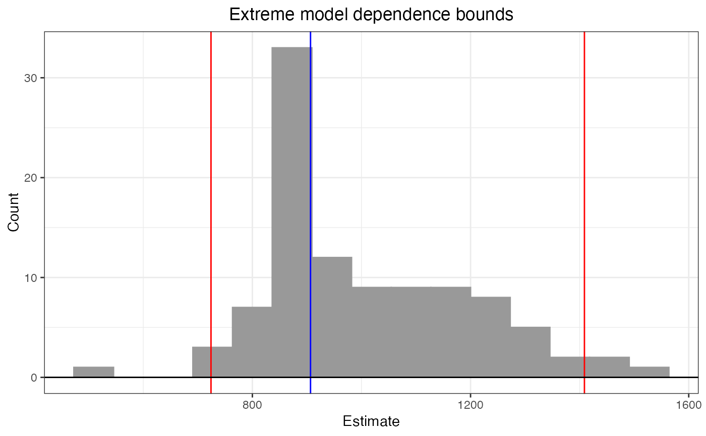
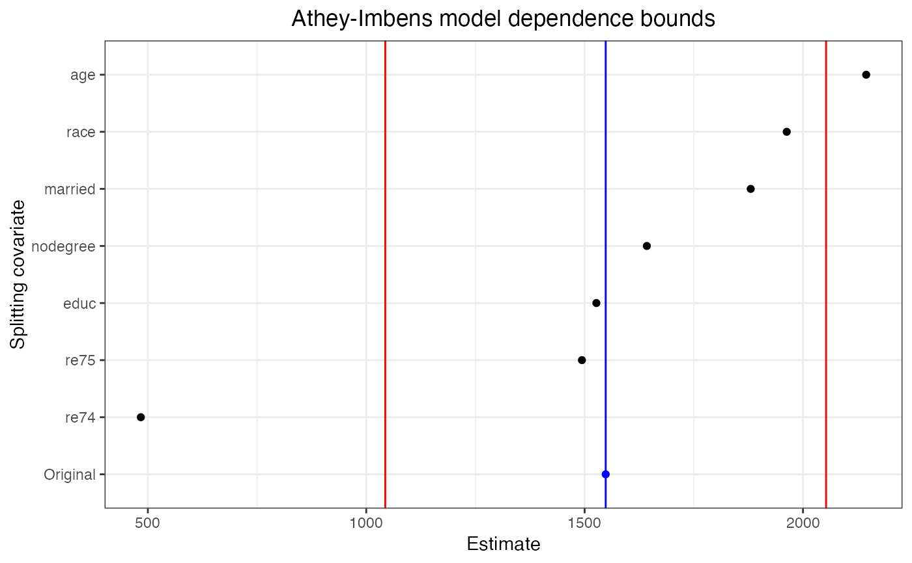

modelDependence.RdmodelDependence() computes model dependence bounds for a single dataset using either the extreme bounds procedure or Athey-Imbens procedure. The width of the bounds indicates the degree of model dependence present in the dataset. Wide bounds imply that treatment effects could vary greatly depending on the outcome model used and therefore depend heavily on it.
modelDependence(base.form = NULL, dataset, treatment, outcome, covariates, weights = NULL, method = c("extreme-bounds", "athey-imbens"), model.dependence.ests = 101, specifications = NULL, cutpoints = NULL, cutpoint.method = c("mean", "median", "segmented"), verbose = TRUE, seed = NULL) # S3 method for modelDependenceBounds plot(x, ...) # S3 method for modelDependenceBounds print(x, ...)
| base.form | a |
|---|---|
| dataset | a data frame containing the variables named in |
| treatment | the name of the treatment variable. If missing and |
| outcome | the name of the outcome variable. Ignored if |
| covariates | a character vector containing the names of the covariates over which model dependence is to be assessed. Can also be a one-sided formula with the covariates on the right-hand side. If omitted, all variables in |
| weights | an optional vector of weights (e.g., matching weights) to be included in the fitted models. |
| method | the method of computing model dependence bounds. Can be one of |
| model.dependence.ests | when |
| specifications | when |
| cutpoints | when |
| cutpoint.method | when |
| verbose |
|
| seed | the seed for the random number generator. If |
| x | a |
| ... | for |
The simplest way to estimate the model dependence bounds is to supply base.form with the treatment and covariates on the right hand side and treatment supplied.
The extreme bounds procedure (Leamer, 1983) works by fitting many different models of various functional forms with many combinations of the covariates. When specifications is not supplied, these models are randomly generated by appending to the model in base.form sets of squares, cubes, and two-way interactions of the covariates with model.dependence.ests controlling how many such models are estimated. More is always better but will take longer. The 2.5th and 97.5th percentiles of the treatment effects from all the specifications are used as the model dependence bounds.
The Athey-Imbens procedure (Athey & Imbens, 2015) works by splitting covariates at points determined by cutpoints or cutpoint.method, fitting the base.form model within each subset, averaging the two effect estimates, and computing the standard deviation of the resulting effect estimates. The base treatment effect estimate (fit in the full sample) minus and plus this standard deviation are used as the model dependence bounds. cutpoints can be supplied or estimated for each covariate. For covariates with exactly two unique values, the data will be split according to those values. For covariates with more than two values, if a cutpoint is supplied, it will be used to split the dataset; otherwise, a cutpoint will be estimated as the mean or median of the covariate or using segmented regression as implemented in segmented::segmented() depending on the argument to cutpoint.method.
It is important to consider the interpretation of base.form. If there is no confounding by the covariates (e.g., because of the result of a randomized experiment or successful matching), base.form can specified simply as Y ~ A, with model dependence referring to all the possible adjustment sets and their functional forms. If there is confounding and base.form is specified as Y ~ A (or with only a subset of the confounding covariates included in the model), then model dependence concerns different adjustment sets, and therefore muddles dependence on model specification and covariate choice, which is undesirable. base.form should therefore contain all the covariates required to eliminate confounding, with the model dependence referring to the possible additional terms that could be added to the model to change its functional form. Put simply, the adjustment set should always be in base.form, but after randomization or successful matching the adjustment set might be empty.
A modelDependenceBounds object, which is numeric vector with the lower and upper model dependence bounds and attributes concerning the fit. The attribute "method" will contain the method supplied to method. The attribute base.est will contain the effect estimated using base.form with no modification. The attribute "estimates" will contain the effect estimates used in computing the bounds. For the extreme bounds procedure, the attribute "sepcifications" contains a list of the model specifications used, each as a string representing the model formula. This can be supplied to future calls to modelDependence() or estimateEffects(). For the Athey-Imbens procedure, the attribute "sigma" contains the standard deviation of the effect estimates that, when added to and subtracted from the estimate resulting from the model specified in base.form, forms the bounds.
The print() method displays the bounds as well as their difference. Note that the difference is not actually stored in the modelDependenceBounds object but can be computed using diff().
The plot() method displays a histogram of the effect estimates when method = "extreme-bounds" and a dot plot of the estimates when method = "athey-imbens". Red vertical lines indicate the reported bounds, and the blue vertical line indicates the base estimate. The resulting object is a ggplot object that can be further manipulated using ggplot2 functionality.
Athey, S., & Imbens, G. (2015). A measure of robustness to misspecification. American Economic Review, 105(5), 476-80.
Leamer, E. E. (1983). Let's take the con out of econometrics. The American Economic Review, 73(1), 31-43.
library(MatchIt) data("lalonde", package = "MatchIt") #Model dependence prior to matching b1 <- modelDependence(re78 ~ treat + age + educ + married + race + nodegree + re74 + re75, dataset = lalonde, treatment = "treat", method = "extreme-bounds", seed = 12345) b1 # diff = 823.8418#> Extreme model dependence bounds: #> lower upper diff #> 858.8441 1682.6859 823.8418#Model dependence after matching m.out <- matchit(treat ~ age + educ + married + race + nodegree + re74 + re75, data = lalonde, distance = "mahalanobis", replace = TRUE) b2 <- modelDependence(re78 ~ treat + age + educ + married + race + nodegree + re74 + re75, dataset = lalonde, treatment = "treat", method = "extreme-bounds", seed = 12345, weights = m.out$weights) b2 # diff = 684.6681#> Extreme model dependence bounds: #> lower upper diff #> 724.1218 1408.7899 684.6681#Athey-Imbens bounds using various cutpoints # Here we use cutpoints of 100 for re74 and re75 and split # other covariates at their means b3 <- modelDependence(re78 ~ treat + age + educ + married + race + nodegree + re74 + re75, dataset = lalonde, treatment = "treat", method = "athey-imbens", cutpoints = list(re74 = 100, re75 = 100), cutpoint.method = "mean") b3#> Athey-Imbens model dependence bounds: #> lower upper diff #> 1043.574 2052.914 1009.340